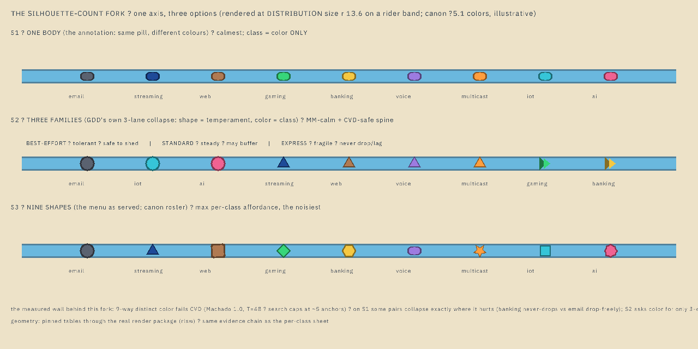
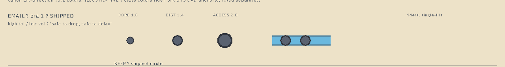
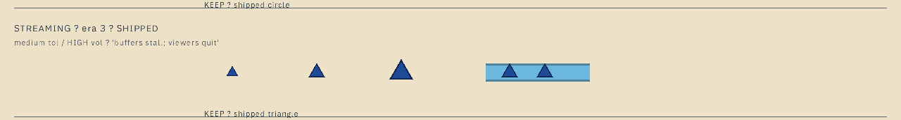
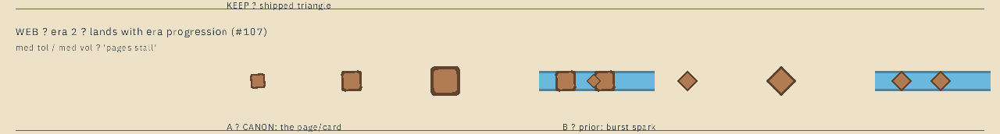
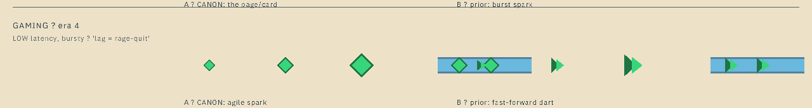
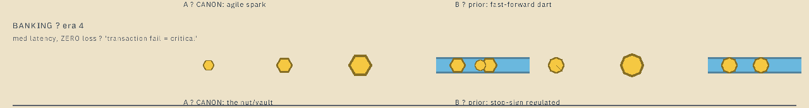
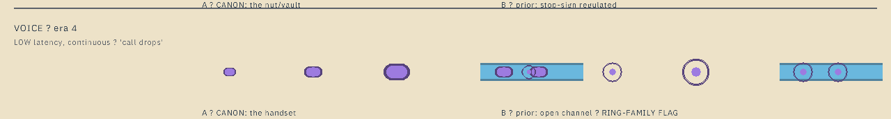
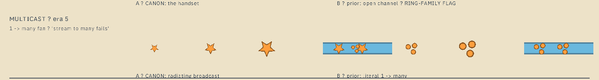
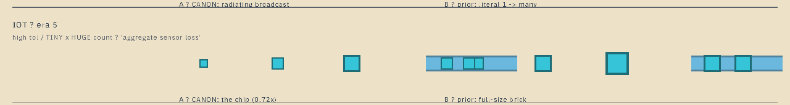
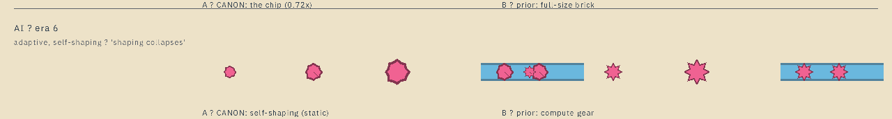

| # | Class | Era | Function in play (what a player must infer at a glance) | Shape today | Status |
|---|---|---|---|---|---|
| 1 | 1 | tolerant filler — safe to drop, safe to delay | circle ✓ rendered | SHIPPED | |
| 2 | Streaming | 3 | volume flood — buffers can stall | triangle ✓ rendered | SHIPPED |
| 3 | Web | 2 | steady medium — pages stall | circle fallback | GAP |
| 4 | Gaming | 4 | bursty, low latency — can't lag | circle fallback | GAP |
| 5 | Banking | 4 | measured, zero loss — transaction fail is critical | circle fallback | GAP |
| 6 | Voice | 4 | continuous, low latency — call drops | circle fallback | GAP |
| 7 | Multicast | 5 | one→many fan — stream to many fails | circle fallback | GAP |
| 8 | IoT | 5 | tiny × huge count — aggregate sensor loss | circle fallback | GAP |
| 9 | AI | 6 | adaptive, self-shaping — shaping collapses | circle fallback | GAP |
The shipped size chain r = tile26 × zoom × 0.24 × 1.35 × 1.15 gives
r ≈ 9.7 px at CORE (fit 1.0), 13.6 at DISTRIBUTION (1.4), 19.4 at ACCESS (default 2.0).
Every candidate on this menu was rendered at all three rungs (crops below) and pixel-verified present
(PIL counts per class color, all 42 candidate×rung cells populated). Vision screened; measurement decided.
Shape candidates carry no new color claims. The sheet's hues are the committed art-direction §5.1 hexes, illustrative only — the class color system is the sibling fork (5 CVD anchors × lightness bands, "9-way distinct color proven unachievable"). Two canon-color collisions are flagged there, not here: banking-gold vs the wide-pipe gold, multicast-tangerine vs the congested amber. Shapes must carry identity precisely because 9-way color can't.
The ring is a loaded telegraph family at HEAD: health rings, router tier rings, the dashed tie ring, crisis recede rings. Voice's prior-session ring candidate is flagged accordingly. Squares exist at building/port-tick scale (not packet scale); triangles exist as streaming + house roofs (different scale); no hexagon, star, diamond, pill, blob, or gear signal exists today.
§10.4 pinned tables only — every polygon here is a pinned vertex table (RSQ12 / HEX6 / PILL16 / STAR10 / BLOB16 + CIRCLE16), zero transcendentals. Deterministic (pure function of state), reduced-motion inert (all candidates are static silhouettes), never-color-alone by construction. Goldens: any adopted shape moves packet pixels in T2 goldens — a deliberate re-bless, documented.
_bmad-output/implementation-artifacts/packet-plumber-v2-shape-vocab-2026-08-28.md; re-trigger = the first story wave that introduces a third packet class (era-4 content).

| Option | The read | What it costs | What it buys |
|---|---|---|---|
| S1 · One body |
The MM-cars calm — every packet the same friendly capsule; class = color only. | The margin collapse, measured. The canon §5.1 nine-color roster fails the gate as-is: gaming↔iot 12.1 under tritanopia (same color), banking↔multicast 32.7 under deutan. Re-searching under the game's color law (warm reserved for danger, pipe-tier hues, board calm), the achievable worst-pair distance at 9 colors lands ~50 against a gate of 48 — zero margin; the full session search (aesthetic bands included) capped at ~5 anchors. Identity on this axis alone is fragile to every future color decision. Crutches would be needed: icons on ~10px packets (mush at CORE), or inspection clicks — the tooltip-tax the affordance principle exists to kill. | Maximum calm. Zero new silhouettes to design. |
| S2 · Three families |
Shape answers the ONE question that changes how you treat a packet — how careful must I be with it? — and color answers who it is. Circle = tolerant/best-effort · triangle = steady/standard · chevron-dart = fragile/express. This is the GDD's own DiffServ collapse (“group, don't proliferate”) made visible. | Classes inside a family share a silhouette (you read streaming-vs-web by color/icon, not silhouette). Multicast's 1→many fan-out read moves to color+icon. Two shipped identities survive intact (email circle, streaming triangle); only ONE new body ships (the dart). The per-class A/B menu below collapses into this fork. | MM-calm (3 silhouettes, not 9) and the CVD-safe spine: color only ever needs a 3–4-way within-family read (comfortably inside the 5-anchor budget), and the shape axis alone answers “safe to shed?” for a player who can't trust the hue. |
| S3 · Nine shapes |
Every class its own silhouette — the full affordance read per class, and the late-era roster stays distinguishable with color off entirely. | The noise you flagged: nine silhouettes live at once in eras 5–6 (it drips in — eras 1–3 carry at most two shapes on screen). | Max meaning per packet; strongest “what kinda packet is that?” at thumbnail. |

Affordance: smooth, edgeless — nothing catches on it, nothing is asked of it. Reads "plain, unbotherable, filler." The envelope meaning rides the [LATER] icon channel (✉).
Look-fit: proven at every zoom for the whole life of the game; the MM-car baseline the glint/echo polish was tuned on.
Not happy with the circle? Say what email should read as instead — the record takes your words verbatim.

Affordance: two readings reinforce each other — the play-button ▶ (media) and a directed wedge (flow). Points where it's going; the flood rides the volume/density channel, not the silhouette.
Look-fit: shipped, golden-pinned, the class players have already met.
Describe a different read if the triangle says the wrong thing to you.

Affordance: a browser card / page tile — literally what web traffic carries. Even, stable, steady — the "reliable medium load" read. Corners rounded so it never reads as a raw building block at packet scale.
Look-fit: distinct from everything shipped (circle, triangle) and from every telegraph; crisp at CORE r9.7 (verified in the crop); the rounded corner keeps it off the port-tick rectangle family.
Affordance: a sparkle/burst — quick pop, rich media arrives at once.
Look-fit: fine at all rungs, but it is Gaming's canon shape — ruling this coheres only with Gaming = chevron (the exclusivity flag above). Reads "fast", which is Web's weakest trait.

Affordance: four sharp points, no resting face — reads agile/sparky. Sharpness = speed, edge = latency sensitivity.
Look-fit: distinct from all shipped shapes; at CORE r9.7 it reads clearly angular. Coexists with Web only if Web ≠ diamond.
Affordance: ⏩ — the strongest speed read available at this size. Points along its motion (packets orient by travel direction), so "fast" is written twice: silhouette + heading.
Look-fit: verified at all three rungs; reads even at CORE; nothing else in the signal inventory is chevron-shaped. Costs one more vertex pair than the diamond — trivial.

Affordance: hardware: a nut, a bolt head, honeycomb structure — tightened, load-bearing, sealed. "Structural integrity" is the closest silhouette gets to "never drops."
Look-fit: flat-top orientation reads stable rather than directional (banking is measured, not fast); clearly faceted vs the circle at CORE (verified); no hexagon anywhere in the signal inventory.
Affordance: the regulated, authoritative sign — "this service does not fail." Institutional weight.
Look-fit: works at DIST/ACCESS; at CORE the 8-gon is nearly a twin of the hexagon (vision-corroborated, and they're alternatives so mutual distinctness is moot — but octagon-vs-circle edges read softer than hexagon's). Slightly busier silhouette at thumbnail size.

Affordance: a phone handset is a capsule; a capsule reads unbroken, continuous — "the stream must not drop." Oriented along its motion it doubles as a smooth-flow read.
Look-fit: verified at all rungs; unmistakable vs circle (aspect) and vs streaming triangle at a glance; zero telegraph collisions. Personal-height ellipse also echoes nothing else on the board.
Affordance: an open loop = the live connection.
Look-fit: the ring is the game's telegraph family — health rings, tier rings, the dashed tie ring, crisis recede rings. A packet-sized ring risks reading as a STATE, not a TYPE (vision corroborated: at CORE it reads like a tiny target/marker). Ruling this in means re-examining it against every ring telegraph in the heist's palcheck.

Affordance: sparkle/burst radiating from a point — the antenna broadcast. Reads "one source, many rays."
Look-fit: the most distinct silhouette on the sheet — nothing else has spikes. At CORE r9.7 the points still separate it from blob/gear (verified). One star = one sender, visually.
Affordance: three dots where one packet stood — duplication made visible. The most literal one-to-many read possible: you can SEE the fan-out.
Look-fit: reads beautifully at DIST/ACCESS; at CORE the three ~4px dots are faint but countable (vision-corroborated — the honest trade: literal meaning vs thumbnail weight). No collisions; sizing can bias the sub-dot count if you want more presence.

Affordance: a microchip die, drawn small — the SIZE is the semantic: "there are thousands of me." Pairs with the canon size-grammar (a class's size carries bandwidth) rather than fighting it.
Look-fit: corners visible at CORE (verified — small but square); unmistakable in packs, which is how IoT actually travels. Note the canon size attribute (bandwidth) is not yet implemented — this ruling assumes tiny rides that axis when it lands (open question below).
Affordance: a solid unit — simple, countable.
Look-fit: most legible at CORE of the two, but loses the tiny×huge read entirely and sits close to web-A's rounded square (rounded vs sharp is a subtle distinction at r9.7).

Affordance: the shape that isn't fixed — the silhouette IS the function. Shipped as a static pinned lumpy polygon (reduced-motion-inert by construction); a slow vertex-cycle morph would be a [LATER] motion-channel read, and the static form already reads "organic, not-a-machine."
Look-fit: distinct from the circle at every rung (the lumps carry); distinct from star (no spikes) and gear (no teeth rhythm). Zero collisions.
Affordance: machinery/compute — the AI-inference read for the technically-minded.
Look-fit: the busiest silhouette on the sheet; at CORE the 16-tooth rhythm muddies (vision-corroborated). It says "machine" louder than it says "adaptive." Treat as the anti-blob if you want AI to read engineered.
Canon §5 gives every class a size attribute (bandwidth) — not implemented; packets ship single-size. IoT's tiny ruling leans on it. Land the size axis with (or before) the shapes?
Catalog icons (mail/play/…) are still [LATER]. Shapes + icons are the two durable channels; when do icons land?
The live-packet glint is hand-offset per silhouette; the heist tunes offsets per adopted shape (mechanical, pinned-table work).
If blob is adopted: a slow vertex-cycle morph is a motion-channel polish — reduced-motion must pin it static. [LATER], decision rides the juice pass.
The 5-anchor CVD palette × lightness bands (sibling session) assigns hues to the new classes; shapes carry identity either way. That ruling is separate and still open.
Adopted shapes move packet pixels in every packet-bearing T2 golden (email/streaming only if amended) — deliberate re-bless, documented per the wire-aesthetics doctrine.